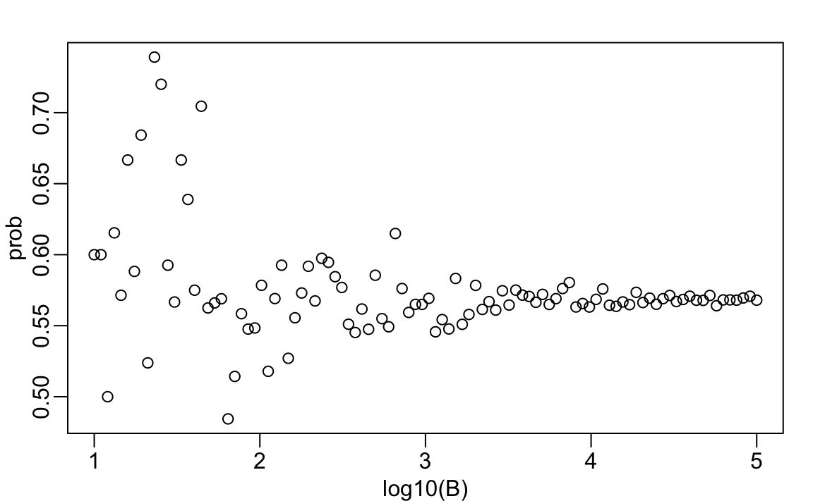

3 Discrete probability
We begin by covering some basic principles related to categorical data. The specific area of probability which deals with categorical data is referred to as discrete probability. Understanding this topic, will help us comprehend the probability theory we will later introduce for numeric and continuous data, which is much more common in data analysis. Since discrete probability is invaluable in card games, we will use these as illustrative examples.
3.1 Relative frequency
The term probability is used in everyday language. Yet answering questions about probability is often hard, if not impossible. In this section, we discuss a mathematical definition of probability that allows us to give precise answers to certain questions.
For example, if I have 2 red beads and 3 blue beads inside an urn1 (most probability books use this archaic term, so we do too) and I pick one at random, what is the probability of picking a red one? Our intuition tells us that the answer is 2/5 or 40%. A precise definition can be given by noting that there are five possible outcomes, of which two satisfy the condition necessary for the event “pick a red bead”. Since each of the five outcomes has an equal chance of occurring, we conclude that the probability is .4 for red and .6 for blue.
A more tangible way to think about the probability of an event is as the proportion of times the event occurs when we repeat the experiment an infinite number of times, independently, and under the same conditions.
3.2 Notation
We use the notation \(\mbox{Pr}(A)\) to denote the probability of event \(A\) occurring. We use the very general term event to refer to things that can happen when something occurs by chance. In our previous example, the event was “picking a red bead.” In a political poll, where we randomly phone 100 likely voters at random, an example of an event is “calling 48 Democrats and 52 Republicans.”
In data science applications, we often encounter continuous variables. These events will often be questions, such as “Is this person taller than 6 feet?” In these cases, we represent events in a more mathematical form: \(X \geq 6\). We will see more of these examples later, but for now, we will focus on categorical data.
3.3 Probability distributions
If we know the relative frequency of the different categories, defining a distribution for categorical outcomes is relatively straightforward. We simply assign a probability to each category. In cases analogous to beads in an urn, for each bead type, their proportion defines the distribution.
If we are randomly calling likely voters from a population that is 44% Democrat, 44% Republican, 10% undecided, and 2% Green Party, these proportions define the probability for each group. The probability distribution is:
| Pr(picking a Republican) | = | 0.44 |
| Pr(picking a Democrat) | = | 0.44 |
| Pr(picking an undecided) | = | 0.10 |
| Pr(picking a Green) | = | 0.02 |
3.4 Monte Carlo
Computers provide a way to actually perform the simple random experiment described above: pick a bead at random from a bag that contains three blue beads and two red ones. Random number generators permit us to mimic the process of picking at random.
An example is the sample function in R. We demonstrate its use in the code below. First, we use the function rep to generate the urn:
and then use sample to pick a bead at random:
sample(beads, 1)
#> [1] "red"This line of code produces a single random outcome. We want to repeat this experiment an infinite number of times, but it is impossible to repeat indefinitely. Instead, we repeat the experiment a large enough number of times to make the results practically equivalent to repeating indefinitely. This is an example of a Monte Carlo simulation.
Much of what mathematical and theoretical statisticians study, topics that we do not cover in this book, relates to providing rigorous definitions of “practically equivalent”. Additionally, they explore how close a large number of experiments brings us to what happens in the limit. Later in this section, we provide a practical approach to determining what is “large enough”.
To perform our first Monte Carlo simulation, we use the replicate function, which allows us to repeat the same task any number of times. Here, we repeat the random event \(B =\) 10,000 times:
We can now verify if our definition actually is in agreement with this Monte Carlo simulation approximation. We use table to see the distribution:
tab <- table(events)
tab
#> events
#> blue red
#> 6027 3973and prop.table gives us the proportions:
prop.table(tab)
#> events
#> blue red
#> 0.603 0.397The numbers above represent the estimated probabilities obtained by this Monte Carlo simulation. Statistical theory, not covered here, tells us that as \(B\) gets larger, the estimates get closer to 3/5=.6 and 2/5=.4.
This is a simple and not very useful example, since we can easily compute the probabilities mathematically. Monte Carlo simulations are useful when it is hard, or impossible, to compute the exact probabilities mathematically. Before delving into more complex examples, we use simple ones to demonstrate the computing tools available in R.
3.4.1 Setting the random seed
Before we continue, we will briefly explain the following important line of code:
set.seed(1986) Throughout this book, we use random number generators. This implies that many of the results presented can potentially change by chance, indicating that a static version of the book may show a different result than what you obtain when following the code as presented. This is actually fine, given that the results are random and change over time. However, if you want to ensure that results are consistent with each run, you can set R’s random number generation seed to a specific number. Above we set it to 1986. We want to avoid using the same seed every time. A popular way to pick the seed is the year - month - day. For example, we chose 1986 on December 20, 2018: \(2018 - 12 - 20 = 1986\).
You can learn more about setting the seed by looking at the documentation:
?set.seedIn the exercises, we may ask you to set the seed to assure that the results you obtain are exactly what we expect them to be.
3.4.2 With and without replacement
The function sample has an argument that allows us to pick more than one element from the urn. However, by default, this selection occurs without replacement: after a bead is selected, it is not returned to the bag. Notice what happens when we ask to randomly select five beads:
This results in rearrangements that consistently comprise three blue and two red beads. If we ask that six beads be selected, we get an error:
sample(beads, 6)Error in sample.int(length(x), size, replace, prob) : cannot take a sample larger than the population when 'replace = FALSE'
However, the sample function can be used directly, without the use of replicate, to repeat the same experiment of picking 1 out of the 5 beads, continually, under the same conditions. To do this, we sample with replacement: return the bead back to the urn after selecting it. We can tell sample to do this by changing the replace argument, which defaults to FALSE, to replace = TRUE:
events <- sample(beads, B, replace = TRUE)
prop.table(table(events))
#> events
#> blue red
#> 0.602 0.398Not surprisingly, we get results very similar to those previously obtained with replicate.
3.5 Independence
We say two events are independent if the outcome of one does not affect the other. The classic example is coin tosses. Every time we toss a fair coin, the probability of seeing heads is 1/2, regardless of what previous tosses have revealed. The same is true when we pick beads from an urn with replacement. In the example above, the probability of red is 0.40 regardless of previous draws.
Many examples of events that are not independent come from card games. When we deal the first card, the probability of getting a King is 1/13 since there are thirteen possibilities: Ace, Deuce, Three, \(\dots\), Ten, Jack, Queen, King, and Ace. Now, if we deal a King for the first card and do not replace it in the deck, the probability of a second card being a King decreases because there are only three Kings left. The probability is 3 out of 51. These events are therefore not independent: the first outcome affected the next one.
To see an extreme case of non-independent events, consider our example of drawing five beads at random without replacement:
x <- sample(beads, 5)If you have to guess the color of the first bead, you will predict blue since blue has a 60% chance. However, if I show you the result of the last four outcomes:
x[2:5]
#> [1] "blue" "blue" "blue" "red"would you still guess blue? Of course not. Now, you know that the probability of red, as the the only bead left is red. The events are not independent, so the probabilities change.
3.6 Conditional probabilities
When events are not independent, conditional probabilities are useful. We have already demonstrated an example of a conditional probability: we computed the probability that a second dealt card is a King given that the first was a King. In probability, we use the following notation:
\[ \mbox{Pr}(\mbox{Card 2 is a king} \mid \mbox{Card 1 is a king}) = 3/51 \]
We use the \(\mid\) as shorthand for “given that” or “conditional on.”
When two events, say \(A\) and \(B\), are independent, we have:
\[ \mbox{Pr}(A \mid B) = \mbox{Pr}(A) \]
This is the mathematical way of saying: the fact that \(B\) happened does not affect the probability of \(A\) happening. In fact, this can be considered the mathematical definition of independence.
3.7 Addition and multiplication rules
3.7.1 Multiplication rule
If we want to determine the probability of two events, say \(A\) and \(B\), occurring, we can use the multiplication rule:
\[ \mbox{Pr}(A \mbox{ and } B) = \mbox{Pr}(A)\mbox{Pr}(B \mid A) \] Let’s use Blackjack as an example. In Blackjack, you are assigned two random cards. After you see what you have, you can ask for more. The goal is to get closer to 21 than the dealer, without going over. Face cards are worth 10 points and Aces are worth 11 or 1 (you choose).
In a Blackjack game, to calculate the chances of obtaining a 21 by drawing an Ace and then a face card, we compute the probability of the first card being an Ace and multiply it by the probability of drawing a face card or a 10, given that the first card was an Ace: \(1/13 \times 16/51 \approx 0.025\)
The multiplication rule also applies to more than two events. We can use induction to expand for more events:
\[ \mbox{Pr}(A \mbox{ and } B \mbox{ and } C) = \mbox{Pr}(A)\mbox{Pr}(B \mid A)\mbox{Pr}(C \mid A \mbox{ and } B) \]
3.7.2 Multiplication rule under independence
When dealing with independent events, the multiplication rule becomes simpler:
\[ \mbox{Pr}(A \mbox{ and } B \mbox{ and } C) = \mbox{Pr}(A)\mbox{Pr}(B)\mbox{Pr}(C) \]
However, we have to be very careful before using this version of the multiplication rule, since assuming independence can result in very different and incorrect probability calculations when events are not actually independent.
As an example, imagine a court case in which the suspect was described as having a mustache and a beard. The defendant has a mustache and a beard, and the prosecution brings in an “expert” to testify that 1/10 men have beards and 1/5 have mustaches. Using the multiplication rule, we therefore conclude that only \(1/10 \times 1/5\) or 0.02 have both.
But, to multiply like this, we need to assume independence! Let’s say the conditional probability of a man having a mustache, conditional on him having a beard, is .95. Then, the correct calculation probability is much higher: \(1/10 \times 95/100 = 0.095\).
The multiplication rule also gives us a general formula for computing conditional probabilities:
\[ \mbox{Pr}(B \mid A) = \frac{\mbox{Pr}(A \mbox{ and } B)}{ \mbox{Pr}(A)} \]
To illustrate how we use these formulas and concepts in practice, we will use several examples related to card games.
3.7.3 Addition rule
The addition rule tells us that:
\[ \mbox{Pr}(A \mbox{ or } B) = \mbox{Pr}(A) + \mbox{Pr}(B) - \mbox{Pr}(A \mbox{ and } B) \]
This rule is intuitive; consider a Venn diagram. If we simply add the probabilities, we count the intersection twice, so we need to subtract one instance.

3.8 Combinations and permutations
In our very first example, we imagined an urn with five beads. As a reminder, to compute the probability distribution of a single draw, we simply listed out all the possibilities, which amounted to 5. Subsequently, for each event, we counted how many of these possibilities were associated with the event. The resulting probability of choosing a blue bead is 3/5, as three of the five possible outcomes were blue.
For more complicated cases, the computations are not as straightforward. For instance, what is the probability that, if I draw five cards without replacement, I get all cards of the same suit, which is known as a “flush” in poker? In a discrete probability course, you learn theory on how to make these computations. Here, we focus on how to use R code to compute the answers.
First, let’s construct a deck of cards. For this, we will use the expand.grid and paste functions. We use paste to create strings by joining smaller strings. To do this, we take the number and suit of a card, and create the card name like this:
number <- "Three"
suit <- "Hearts"
paste(number, suit)
#> [1] "Three Hearts"paste also works on pairs of vectors performing the operation element-wise:
paste(letters[1:5], as.character(1:5))
#> [1] "a 1" "b 2" "c 3" "d 4" "e 5"The function expand.grid gives us all the combinations of entries of two vectors. For example, if you have blue and black pants and white, grey, and plaid shirts, all your combinations are:
expand.grid(pants = c("blue", "black"), shirt = c("white", "grey", "plaid"))
#> pants shirt
#> 1 blue white
#> 2 black white
#> 3 blue grey
#> 4 black grey
#> 5 blue plaid
#> 6 black plaidHere is how we generate a deck of cards:
suits <- c("Diamonds", "Clubs", "Hearts", "Spades")
numbers <- c("Ace", "Deuce", "Three", "Four", "Five", "Six", "Seven",
"Eight", "Nine", "Ten", "Jack", "Queen", "King")
deck <- expand.grid(number = numbers, suit = suits)
deck <- paste(deck$number, deck$suit)With the deck constructed, we can double-check that the probability of a King as the first card is 1/13 by computing the proportion of possible outcomes that satisfy our condition:
Now, what about the conditional probability of the second card being a King, given that the first card was a King? Earlier, we deduced that if one King is already drawn from the deck, leaving 51 cards, then this probability is 3/51. Let’s confirm by listing out all possible outcomes.
To do this, we can use the permutations function from the gtools package. For any list of size n, this function computes all the different combinations we can obtain when we select r items. Here are all the ways we can choose two numbers from a list consisting of 1,2,3:
library(gtools)
permutations(3, 2)
#> [,1] [,2]
#> [1,] 1 2
#> [2,] 1 3
#> [3,] 2 1
#> [4,] 2 3
#> [5,] 3 1
#> [6,] 3 2Observe that the order matters here: 3,1 is different than 1,3. Also, note that (1,1), (2,2), and (3,3) do not appear because once we pick a number, it can’t appear again.
Optionally, we can add a vector. If you want to see five random seven digit phone numbers out of all possible phone numbers (without repeats), you can type:
all_phone_numbers <- permutations(10, 7, v = 0:9)
n <- nrow(all_phone_numbers)
index <- sample(n, 5)
all_phone_numbers[index,]
#> [,1] [,2] [,3] [,4] [,5] [,6] [,7]
#> [1,] 1 3 8 0 6 7 5
#> [2,] 2 9 1 6 4 8 0
#> [3,] 5 1 6 0 9 8 2
#> [4,] 7 4 6 0 2 8 1
#> [5,] 4 6 5 9 2 8 0Instead of using the numbers 1 through 10, the default, it uses what we provided through v: the digits 0 through 9.
To compute all possible ways we can choose two cards when the order matters, we type:
hands <- permutations(52, 2, v = deck)This is a matrix with two columns and 2652 rows. With a matrix, we can obtain the first and second cards like this:
first_card <- hands[,1]
second_card <- hands[,2]Now, the cases for which the first hand was a King can be computed as follows:
To get the conditional probability, we compute what fraction of these have a King as the second card:
which is exactly 3/51, as we had already deduced. Notice that the code above is equivalent to:
which uses mean instead of sum and is an R version of:
\[ \frac{\mbox{Pr}(A \mbox{ and } B)}{ \mbox{Pr}(A)} \]
What about if the order does not matter? For example, in Blackjack, if you obtain an Ace and a face card in the first draw, it is called a Natural 21, and you win automatically. If we wanted to compute the probability of this happening, we would enumerate the combinations, not the permutations, since the order does not matter.
combinations(3,2)
#> [,1] [,2]
#> [1,] 1 2
#> [2,] 1 3
#> [3,] 2 3In the second line, the outcome does not include (2,1) because (1,2) already was enumerated. The same applies to (3,1) and (3,2).
So to compute the probability of a Natural 21 in Blackjack, we can do this:
aces <- paste("Ace", suits)
facecard <- c("King", "Queen", "Jack", "Ten")
facecard <- expand.grid(number = facecard, suit = suits)
facecard <- paste(facecard$number, facecard$suit)
hands <- combinations(52, 2, v = deck)
mean(hands[,1] %in% aces & hands[,2] %in% facecard)
#> [1] 0.0483In the last line, we assume the Ace comes first. This assumption is made based on our knowledge of how combination enumerates possibilities, and it will list this case first. However, to be safe, we could have written this and produced the same answer:
3.8.1 Monte Carlo example
Instead of using combinations to deduce the exact probability of a Natural 21, we can use a Monte Carlo to estimate this probability. In this case, we draw two cards over and over and keep track of how many 21s we obtain. We can use the function sample to draw two cards without replacement:
hand <- sample(deck, 2)
hand
#> [1] "Queen Clubs" "Seven Spades"and then check if one card is an Ace and the other is a face card or a 10. Going forward, we include 10 when we refer to a face card. Now, we need to check both possibilities:
If we repeat this 10,000 times, we get a very good approximation of the probability of a Natural 21.
Let’s start by writing a function that draws a hand and returns TRUE if we get a 21. The function does not need any arguments because it uses objects defined in the global environment.
Here. we do have to check both possibilities: Ace first or Ace second, because we are not using the combinations function. The function returns TRUE if we get a 21 and FALSE otherwise:
blackjack()
#> [1] FALSENow we can play this game, say, 10,000 times:
3.9 Examples
In this section, we describe two discrete probability popular examples: the Monty Hall problem and the birthday problem. We use R to help illustrate the mathematical concepts.
3.9.1 Monty Hall problem
In the 1970s, there was a game show called “Let’s Make a Deal,” with Monty Hall as the host. At some point in the game, contestants were asked to pick one of three doors. Behind one door, there was a prize, while the other doors had a goat behind them to show the contestant had lost. After the contestant picked a door, before revealing whether the chosen door contained a prize, Monty Hall would open one of the two remaining doors and reveal to the contestant that there was no prize behind that door. Then, he would ask, “Do you want to switch doors?” What would you do?
We can use probability to demonstrate that if you stick with the original door choice, your chances of winning a prize remain 1 in 3. However, if you switch to the other door, your chances of winning double to 2 in 3! This might seem counterintuitive. Many people incorrectly think both chances are 1 in 2 since you are choosing between 2 options. You can watch a detailed mathematical explanation on Khan Academy2 or read one on Wikipedia3. Below, we use a Monte Carlo simulation to see which strategy is better. Note that this code is written longer than it should be for pedagogical purposes.
Let’s start with the stick strategy:
B <- 10000
monty_hall <- function(strategy){
doors <- as.character(1:3)
prize <- sample(c("car", "goat", "goat"))
prize_door <- doors[prize == "car"]
my_pick <- sample(doors, 1)
show <- sample(doors[!doors %in% c(my_pick, prize_door)],1)
stick <- my_pick
stick == prize_door
switch <- doors[!doors %in% c(my_pick, show)]
choice <- ifelse(strategy == "stick", stick, switch)
choice == prize_door
}
stick <- replicate(B, monty_hall("stick"))
mean(stick)
#> [1] 0.342
switch <- replicate(B, monty_hall("switch"))
mean(switch)
#> [1] 0.668As we write the code, we see that the lines starting with my_pick and show have no influence on the last logical operation, when we stick to our original choice. From this, we should realize that the chance is 1 in 3, as we initially considered. When we switch, the Monte Carlo estimate confirms the 2/3 calculation. This helps us gain some insight by demonstrating that we are removing a door, show, that is definitely not a winner from our choices. We also see that unless we get it right when we first pick, we win 1 - 1/3 = 2/3 of the times.
3.9.2 Birthday problem
Suppose you are in a classroom with 50 people. If we assume this is a randomly selected group of 50 people, what is the chance that at least two people have the same birthday? Although it is somewhat advanced, we can deduce this mathematically. We will do that later. Here, we use a Monte Carlo simulation. For simplicity, we assume nobody was born on February 29, which doesn’t significantly change the answer.
First, note that birthdays can be represented as numbers between 1 and 365, so a sample of 50 birthdays can be obtained as follows:
n <- 50
bdays <- sample(1:365, n, replace = TRUE)To check if there are at least two people with the same birthday in this particular set of 50 people, we can use the duplicated function, which returns TRUE whenever an element of a vector is a duplicate. Here is an example:
duplicated(c(1, 2, 3, 1, 4, 3, 5))
#> [1] FALSE FALSE FALSE TRUE FALSE TRUE FALSEThe second time 1 and 3 appear, we get a TRUE. So to check if two birthdays were the same, we simply use the any and duplicated functions like this:
any(duplicated(bdays))
#> [1] TRUEIn this case, we see that it did happen; there were at least two people who had the same birthday.
To estimate the probability of a shared birthday in the group, we repeat this experiment by repeatedly sampling sets of 50 birthdays:
B <- 10000
same_birthday <- function(n){
bdays <- sample(1:365, n, replace = TRUE)
any(duplicated(bdays))
}
results <- replicate(B, same_birthday(50))
mean(results)
#> [1] 0.969Were you expecting the probability to be this high?
People tend to underestimate these probabilities. To get an intuition as to why it is so high, think about what happens when the group size is close to 365. At this stage, we run out of days and the probability is one.
Let’s say we want to use this knowledge to make bet with friends about the likelihood of two people sharing the same birthday in a group. At what group size do the chances become greater than 50%? Greater than 75%?
Let’s create a look-up table. We can quickly create a function to compute this for any group size:
Using the function sapply, we can perform element-wise operations on any function:
We can now make a plot of the estimated probabilities of two people having the same birthday in a group of size \(n\):

Now, let’s compute the exact probabilities instead of relying on Monte Carlo approximations. Not only do we obtain the exact answer using math, but the computations are much faster since we did not have to generate experiments.
To make the math simpler, instead of computing the probability of it happening, we will compute the probability of it not happening. For this, we use the multiplication rule.
Let’s start with the first person. The probability that person 1 has a unique birthday is 1. The probability that person 2 has a unique birthday, given that person 1 already took one day, is 364/365. Subsequently, given that the first two people have unique birthdays, person 3 is left with 363 days to choose from. This pattern continues, and we find that the chances of all 50 people having a unique birthday is:
\[ 1 \times \frac{364}{365}\times\frac{363}{365} \dots \frac{365-n + 1}{365} \]
We can write a function that does this for any number:
exact_prob <- function(n){
prob_unique <- seq(365, 365 - n + 1)/365
1 - prod( prob_unique)
}
eprob <- sapply(n, exact_prob)
qplot(n, prob) + geom_line(aes(n, eprob), col = "red")
This plot shows that the Monte Carlo simulation provided a very good estimate of the exact probability. Had we not been able to compute the exact probabilities, we could still accurately estimate them.
3.10 Infinity in practice
The theory described here requires repeating experiments over and over indefinitely. In practice, we can’t do this. In the examples above, we used \(B=10,000\) Monte Carlo experiments, yielding accurate estimates. The larger this number, the more accurate the estimate becomes, until the approximation is so good that your computer can’t tell the difference. However, in more complex calculations, 10,000 may not be nearly enough. Moreover, for some calculations, 10,000 experiments might not be computationally feasible.
In practical scenarios, we won’t know what the answer is beforehand, so we won’t know if our Monte Carlo estimate is accurate. We know that the larger the \(B\), the better the approximation. But how large do we need it to be? This is actually a challenging question, and answering it often requires advanced theoretical statistics training.
One practical approach is to check for the stability of the estimate. The following example illustrates the birthday problem for a group of 25 people.
B <- 10^seq(1, 5, len = 100)
compute_prob <- function(B, n = 25){
same_day <- replicate(B, same_birthday(n))
mean(same_day)
}
prob <- sapply(B, compute_prob)
plot(log10(B), prob)
In this plot, we can see that the values start to stabilize at around 1000. Note that the exact probability, which is known in this case, is 0.5686997.
3.11 Exercises
1. One ball will be drawn at random from a box containing: 3 cyan balls, 5 magenta balls, and 7 yellow balls. What is the probability that the ball will be cyan?
2. What is the probability that the ball will not be cyan?
3. Instead of taking just one draw, consider taking two draws. You take the second draw without returning the first draw to the box. We call this sampling without replacement. What is the probability of the first draw being cyan and the second draw not being cyan?
4. Now repeat the experiment, but this time, after taking the first draw and recording the color, return it to the box and shake the box. We call this sampling with replacement. What is the probability of the first draw being cyan and the second draw not being cyan?
5. Two events \(A\) and \(B\) are independent if \(\mbox{Pr}(A \mbox{ and } B) = \mbox{Pr}(A) P(B)\). Under which situation are the draws independent?
- You don’t replace the draw.
- You replace the draw.
- Neither.
- Both.
6. Let’s say you’ve drawn 5 balls from the box, with replacement, and all have been yellow. What is the probability that the next one will be yellow?
7. If you roll a 6-sided die six times, what is the probability of not seeing a 6?
8. Two teams, let’s say the Celtics and the Cavs, are playing a seven game series. The Cavs are a better team and have a 60% chance of winning each game. What is the probability that the Celtics will win at least one game?
9. Create a Monte Carlo simulation to confirm your answer to the previous problem. Use B <- 10000 simulations. Hint: use the following code to generate the results of the first four games:
The Celtics must win one of these 4 games.
10. Two teams, say the Cavs and the Warriors, are playing a seven game championship series. The first to win four games, therefore, wins the series. The teams are equally good so they each have a 50-50 chance of winning each game. If the Cavs lose the first game, what is the probability that they win the series?
11. Confirm the results of the previous question with a Monte Carlo simulation.
12. Two teams, \(A\) and \(B\), are playing a seven game series. Team \(A\) is better than team \(B\) and has a \(p>0.5\) chance of winning each game. Given a value \(p\), the probability of winning the series for the underdog team \(B\) can be computed with the following function based on a Monte Carlo simulation:
Use the function sapply to compute the probability, call it Pr, of winning for p <- seq(0.5, 0.95, 0.025). Then plot the result.
13. Repeat the exercise above, but now keep the probability fixed at p <- 0.75 and compute the probability for different series lengths: best of 1 game, best of 3 games, best of 5 games,… Specifically, N <- seq(1, 25, 2). Hint: use the function below.